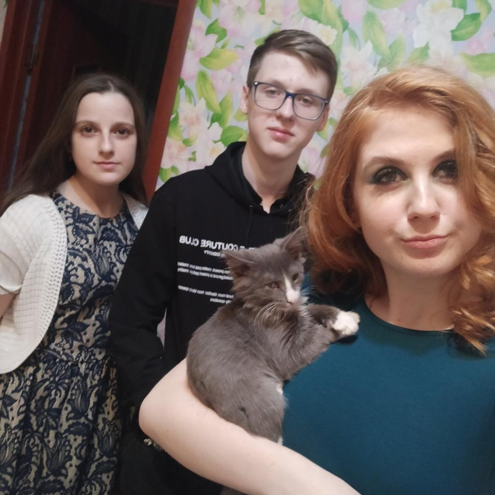
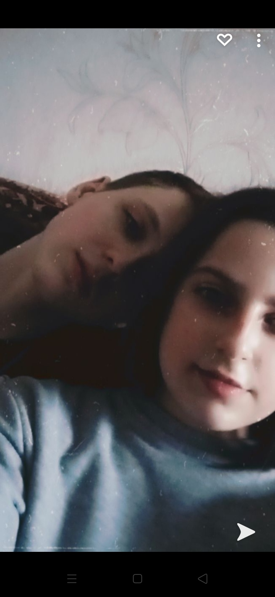

Добро пожаловать в 2021 год!
Это был год, когда всё началось. Первые встречи, первые взгляды, первые слова. Здесь хранятся самые трогательные моменты нашего начала.
Наши фото 2021
Самые памятные моменты нашего первого года


Наша история 2021
Наше первое предложение
День, когда всё началось...
Наше примирение
Тот важный момент, который укрепил нас...
Наш первый киносеанс
Когда мы впервые вместе пошли в кино...
Наши первые статусы
Когда мы решили рассказать всему миру о наших чувствах...
Наши музыкальные ассоциации
Песни, которые стали саундтреком нашего года...
Цифра для главного кода
Пройди все воспоминания 2021 года и ответь на вопросы правильно, чтобы получить цифру для главного кода доступа.
Эта цифра понадобится тебе на главной странице для открытия финального сюрприза